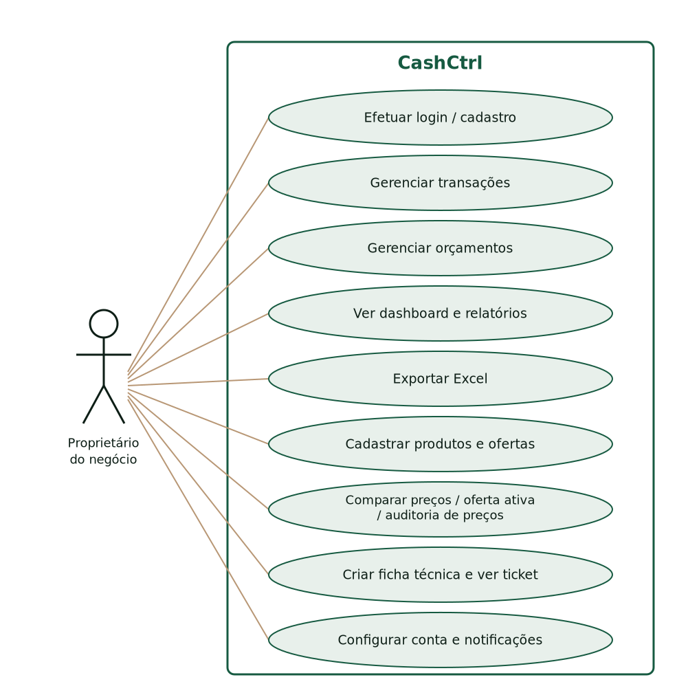
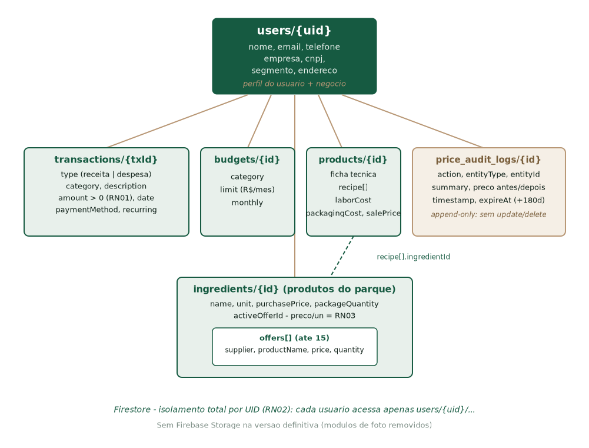

CashCtrl — Respostas aos Pendentes da v0.2
(Versão Definitiva 1.0.0+1)
Respostas técnicas consolidadas aos 42 marcadores do relatório v0.2,
verificadas contra a versão definitiva do app: commit único master,
28/10/2026, v1.0.0+1, sem módulos de foto
RELATÓRIOS TÉCNICOS DO CASHCTRL
São Carlos
28/10/2026
1. Introdução
2. Decisões da equipe (itens 1–5)
2.1 Item 1 — Situação real dos módulos citados (RF13–RF17)
2.2 Item 2 — Controle financeiro (RF01, RF05–RF10)
2.3 Item 3 — Mão de obra e custos diretos no custo do lote
2.4 Item 4 — Markup e mix de vendas
2.5 Item 5 — Perfis (proprietário × produção/precificação)
3. Conteúdo técnico (itens 6–14)
3.1 Item 6 — Diagrama de casos de uso
3.2 Item 7 — Modelo de dados: escolha do banco
3.3 Item 8 — Estrutura de pastas da versão definitiva
3.4 Item 9 — Regras de segurança do banco (firestore.rules)
3.5 Item 10 — Ferramentas de design e UML
3.6 Item 11 — Controle de versão e nome do repositório
3.7 Item 12 — Plataforma, requisitos, web e instalação
3.8 Item 13 — Versão demonstrada
3.9 Item 14 — Nível real de cada módulo
4. Evidências e validação (itens 15–19)
4.1 Item 15 — Comportamento esperado nos cinco testes
4.2 Itens 16–19 — Pesquisa, Canvas/UML/PDCA/pitch, atribuições e considerações finais
5. Manual do usuário (itens 20–25)
5.1 Item 20 — Status geral dos prints da v0.2
5.2 Item 21 — Login e cadastro (versão definitiva)
5.3 Item 22 — Formulários (conferir ao capturar)
5.4 Item 23 — Telas de configurações
5.5 Item 24 — Ícone ao lado do "+" coberto pelo botão azul
5.6 Item 25 — Seção "rendimento e simulação"
6. Conferências (itens 26–29)
6.1 Item 26 — Nome do orientador
6.2 Item 27 — Nome do evento
6.3 Item 28 — Custo R$ 1.532,00 × insumo R$ 1.500,00
6.4 Item 29 — Dados de teste dos prints
7. Acabamento (itens 30–32)
8. Resumo do que falta (só a equipe)
9. Considerações finais
Este documento consolida as respostas aos 42 marcadores pendentes
levantados pelo revisor na v0.2 do relatório técnico do CashCtrl. Todas as
respostas foram verificadas contra a versão definitiva do aplicativo:
commit único na branch master, de 28/10/2026, versão
1.0.0+1 (pubspec.yaml), APK de release com 59 MB. Os
módulos de foto (image_picker + Firebase Storage) foram
removidos dessa versão e nenhuma resposta os considera.
A sinalização é textual: itens marcados com VERIFICADO NO CÓDIGO foram conferidos diretamente na base definitiva; itens marcados com DECISÃO DA EQUIPE exigem deliberação do time (com sugestão registrada no corpo da resposta, quando existe); itens marcados com A CONFIRMAR PELA EQUIPE dependem de dado que só a equipe possui e permanecem explicitamente em aberto — nenhuma resposta foi inventada para eles. Os itens 6 e 7 foram conferidos no código e vêm acompanhados das Figuras 1 e 2, elaboradas a partir da base definitiva (sinalização VERIFICADO NO CÓDIGO + FIGURA). O consolidado do que falta está na seção 8.
VERIFICADO NO CÓDIGO
Tabela 1. Situação real dos conceitos citados pelo revisor na versão definitiva.
| Conceito | Status na versão definitiva | Onde |
|---|---|---|
| Rendimento | NÃO implementado — não existe no código | — |
| Custos fixos × variáveis (classificação) | NÃO implementado como classificação; existem custos diretos por ficha | — |
| Mão de obra | Implementado — campo laborCost entra no custo total | product.dart, product_calculator.dart:94 |
| Markup | Implementado — markup = venda ÷ custo total, exibido no detalhe ("Markup X.XXx") | product_calculator.dart:34, product_detail_screen.dart:221 |
| Contribuição / margem | Implementado — lucro = venda − custo, margem% = lucro ÷ venda, veredito Dá lucro/Prejuízo | product_calculator.dart:95-98 |
| Ponto de equilíbrio | NÃO implementado | — |
DECISÃO DA EQUIPE: o que não existe (rendimento, ponto de equilíbrio, classificação fixo/variável) deve constar na documentação como evolução futura, não como entrega. Implementar agora atrasaria a entrega.
VERIFICADO NO CÓDIGO
Já está implementado e dentro da entrega: transações
(receita/despesa, categorias de negócio, método de pagamento, recorrência),
orçamentos mensais com progresso em tempo real, dashboard operacional,
relatórios unificados com gráficos (fl_chart) e exportação Excel (3 abas).
Telas: expenses_screen.dart, budgets_screen.dart,
reports_screen.dart, home_screen.dart.
DECISÃO DA EQUIPE: restante — apenas manter no escopo (recomendado —
já funciona).
VERIFICADO NO CÓDIGO
Sim, entram. Fórmula no código:
custoTotal = Σ(qtd × preço/un do insumo) + mão de obra + embalagem
(product_calculator.dart:93-94). A participação percentual de cada
item no custo é exibida no ticket (product_detail_screen.dart).
VERIFICADO NO CÓDIGO
VERIFICADO NO CÓDIGO
Não existem. O app é monousuário: cada conta acessa somente seus próprios dados (isolamento por UID no Firestore). Para duas pessoas no mesmo negócio, hoje compartilhariam a mesma conta. DECISÃO DA EQUIPE: registrar como evolução futura (perfis/roles).
VERIFICADO NO CÓDIGO + FIGURA
Atores: Proprietário do negócio (único). Os casos de uso identificados nas telas foram consolidados em 9 casos no diagrama da Figura 1:

Figura 1 – Diagrama de casos de uso do CashCtrl (fonte: código da versão definitiva v1.0.0+1)
VERIFICADO NO CÓDIGO + FIGURA
Cloud Firestore (não Realtime Database). Justificativa: documentos
NoSQL, streams em tempo real nativos ao Flutter (StreamProvider),
regras de segurança por subcoleção e isolamento por UID. Estrutura:
users/{uid} perfil + dados do negócio
users/{uid}/transactions/{id} tipo, categoria, valor, data,
método, recorrência
users/{uid}/budgets/{id} categoria + limite mensal
users/{uid}/ingredients/{id} produto comprado: nome, unidade,
preço de compra, qtd da embalagem,
offers[] (≤15), activeOfferId
users/{uid}/products/{id} ficha técnica: receita[], laborCost,
packagingCost, salePrice
users/{uid}/price_audit_logs/{id}
auditoria de preços (append-only)

Figura 2 – Modelo de dados no Firestore, com isolamento por UID
VERIFICADO NO CÓDIGO
lib/
main.dart, firebase_options.dart, home_screen.dart,
budgets_screen.dart, expenses_screen.dart, reports_screen.dart,
settings_screen.dart
models/ app_user, transaction, budget, ingredient,
ingredient_offer, price_audit_log, product
providers/ user, transaction, budget, ingredient, product
services/ auth_service.dart, firestore_service.dart,
notification_service.dart
(storage_service.dart REMOVIDO — sem upload de fotos)
screens/ login, cadastro, transaction_form, budget_form,
ingredients (Produtos), ingredient_form, ingredient_offers,
offer_form, audit_logs, products (Fichas Técnicas),
product_form, product_detail, compare_prices,
settings/ (edit_profile, notifications, security,
help, terms_privacy)
theme/ utils/ widgets/
android/ web/ firestore.rules storage.rules
VERIFICADO NO CÓDIGO
allow read, write: if request.auth.uid == uid em
users/{uid}/...; não há coleções globais.create/update exige amount numérico
> 0.purchasePrice ≥ 0.allow read, create;
update, delete: if false.DECISÃO DA EQUIPE
O design foi definido em código (design system próprio:
theme/app_colors.dart — fundo 0xFF0D1E16, verde
0xFF165A41, dourado 0xFFB89775) e validado com
protótipos HTML (em
documentacao/logs/sprint2–4/prototipo_*.html). Não houve uso de
Figma. Para o relatório: desenhar diagramas em draw.io/PlantUML.
DECISÃO DA EQUIPE: confirmar qual ferramenta declarar.
VERIFICADO NO CÓDIGO
Git + GitHub, repositório
https://github.com/JoaoVikthor/ctrlcash. Nomenclatura real:
CashCtrl = nome do app (marca, logo camaleão); ctrlcash = nome do
repositório e do pacote Flutter (pubspec: name: ctrlcash). Sugestão
para o texto: "CashCtrl (repositório: ctrlcash)". A branch única passa a ser
master com histórico refeito (um commit).
VERIFICADO NO CÓDIGO
minSdk = padrão do
Flutter) e Web (flutter build web). iOS adiado.app-release.apk (transferir ao aparelho e
instalar com "fontes desconhecidas"), ou rodar a versão web no
navegador.crtlcash-71ac3 (Auth, Firestore).VERIFICADO NO CÓDIGO
v1.0.0+1 (pubspec.yaml), build definitiva de 28/10/2026
sem módulos de foto (decisão da última sprint: a funcionalidade de fotos
não salvava corretamente no Firebase Storage e foi removida — perfil exibe
apenas iniciais).
VERIFICADO NO CÓDIGO
Tabela 2. Nível real de cada módulo na versão definitiva (pós-demonstração).
| Módulo | Nível |
|---|---|
| Autenticação (e-mail/senha + redefinir senha) | Completo |
| Cadastro (pessoal + negócio, multi-etapa) | Completo (sem foto) |
| Transações / receitas e despesas | Completo |
| Orçamentos | Completo |
| Dashboard | Completo |
| Relatórios + Excel | Completo |
| Produtos (parque) + ofertas + comparativo + auditoria | Completo |
| Fichas técnicas + ticket (mão de obra, embalagem, markup, margem) | Completo |
| Notificações locais | Completo (orçamento, recorrência, margem) |
| Perfil/segurança/ajuda/termos | Completo (sem upload de foto) |
| Rendimento, ponto de equilíbrio, perfis de usuário | Não implementado (evolução futura) |
VERIFICADO NO CÓDIGO
Tabela 3. Comportamento da versão definitiva nos cinco testes.
| Teste | O que a versão definitiva faz |
|---|---|
| Caso didático | Fluxo completo: produto (preço/un calculado) → ficha → ticket com veredito |
| Rendimento zero | N/A — rendimento não existe na versão definitiva (a divisão de embalagem usa packageQuantity > 0; se 0, preço/un = 0, sem crash: ingredient.dart:76-78) |
| Insumo ausente | Linha marcada como ausente, custo 0 e aviso hasMissingIngredients (product_calculator.dart:70-78) |
| Contribuição não positiva | Veredito "Prejuízo" em vermelho, margem negativa (products_screen.dart:214-230) |
| Acesso entre contas | Bloqueado pelas regras: só o dono do UID lê users/{uid}/... |
A CONFIRMAR PELA EQUIPE: os resultados executados (data, quem testou, prints) a equipe registra.
A CONFIRMAR PELA EQUIPE
Somente a equipe fornece. Sugestão de quem faz adequações de código:
registrar Vikthor (GitHub JoaoVikthor) como responsável pelo
código do app.
Todos os prints da v0.2 são de versão ANTIGA do app e precisam ser recapturados na APK definitiva (tela "Produtos" agora lista produtos de compra com badge "N ofertas", preço "R$ x / embalagem", preço por unidade em dourado e botão "Comparar preços"; as fichas técnicas mudaram de nome no menu para "Fichas Técnicas"; não há mais fotos nem leitor de código de barras).
VERIFICADO NO CÓDIGO
VERIFICADO NO CÓDIGO
VERIFICADO NO CÓDIGO
Editar Perfil (nome, empresa, CNPJ, segmento, telefone, endereço; avatar com iniciais, sem upload), Notificações (3 chaves: orçamento, recorrências, margem), Segurança e Privacidade (redefinir senha, sessão), Ajuda e Suporte (FAQ) e Termos.
VERIFICADO NO CÓDIGO
Era o leitor de código de barras (ícone dourado de QR,
Icons.qr_code_scanner, no topo da tela Produtos da versão antiga,
encoberto pelo FAB). O módulo foi removido da versão definitiva — o
manual novo não deve citá-lo. (No card de cada produto existe hoje um ícone
dourado de loja = "Ver ofertas".)
Remover/reescrever: rendimento não existe. O que existe: simulação de preço por unidade (preço da embalagem ÷ quantidade) e simulação de troca de fornecedor (tela Comparar preços / ofertas, com ranking, melhor preço e cartão de economia possível; mudança de oferta ativa gera log de auditoria). Descrever isso no lugar.
A CONFIRMAR PELA EQUIPE
Confirmar com a equipe: "Luiz Davi Araújo" ou "AraÚjos"? (Grafia final deve bater com o cadastro da instituição.)
A CONFIRMAR PELA EQUIPE
Inova SENAI ou INTEGRA SENAI? Só a coordenação confirma; usar o nome oficial da edição.
VERIFICADO NO CÓDIGO
Não é erro: o valor exibido como custo da ficha técnica é
custoTotal = insumos + mão de obra + embalagem. A diferença de
R$ 32,00 corresponde a mão de obra/embalagem digitados naquela ficha de teste.
(Custo do produto/insumo isolado é outro número: preço da embalagem.)
VERIFICADO NO CÓDIGO
Concordo com a crítica: recapturar tudo com dados reais da Casa do Salgado (ex.: empada de frango, salgado assado, insumos com preços por kg realistas). O "Olá, !" sem nome ocorre quando o campo nome do perfil está vazio — resolver cadastrando nome completo antes do print. Batata a "R$ 11,00/g" é erro de digitação de teste (preço da embalagem lançado como preço por grama) — no print novo, usar embalagens coerentes (ex.: batata 10 kg por R$ 150,00 → R$ 15,00/kg). "Venda de celular" deve sair do histórico de transações dos prints.
Com isso, gerar a v0.3 final sem marcadores.
Este documento responde aos 32 blocos de marcadores da v0.2 (42 marcadores
no total), organizados nas seções A–F do revisor: decisões da equipe (1–5),
conteúdo técnico (6–14), evidências e validação (15–19), manual do usuário
(20–25), conferências (26–29) e acabamento (30–32). As respostas verificadas no
código refletem a versão definitiva v1.0.0+1 de 28/10/2026, sem
módulos de foto.
Permanecem explicitamente em aberto — sem resposta inventada — somente os itens sinalizados com DECISÃO DA EQUIPE (item 10, além das decisões registradas nos itens 1, 2, 4 e 5) e com A CONFIRMAR PELA EQUIPE (itens 15, 16–19, 26, 27 e 32), consolidados na seção 8. As Figuras 1 (diagrama de casos de uso) e 2 (modelo de dados no Firestore) foram elaboradas a partir do código da versão definitiva e estão embutidas neste documento. Com esses encaminhamentos, o próximo passo é gerar a v0.3 final do relatório, sem marcadores.
Figuras 1 e 2 embutidas: diagrama de casos de uso (fig1_casos_de_uso.png, 1001×1011) e modelo de dados no Firestore (fig2_modelo_dados.png, 1001×761), ambos elaborados a partir do código da versão definitiva. Tabelas 1–3 preenchidas com o estado real da versão definitiva. Nenhum segredo (.env, keystore, google-services.json) foi lido ou citado neste documento.